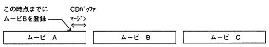
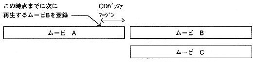

If you want to play a movie that has been divided into multiple parts continuously, or if you want to suspend the playing movie and branch to another movie (branch playback), use the stream system to perform seamless branching (in the file system) Does not support seamless branch). Seamless branching is achieved by moving the CD drive pickup to the next movie to play while playing movie data pre-read into the CD buffer. Therefore, a certain amount of movie data must be stored in the CD buffer, and it is recommended that the movie data transfer rate not exceed 290KB / S (in double speed mode). If the movie data transfer rate is 290KB / S, when the first movie is played back for 15 seconds, about 150KB of movie data is stored in the CD buffer, and it takes about 0.5 seconds to play the next movie. There will be a margin. If the next movie header and the first sample data can be read during this margin, a completely seamless branch can be achieved.
● Continuous playback with seamless branch 1
Figure 3.1 originally shows one movie divided into three. By registering movie B as the next movie to be played (CPK_EntryNext function) during playback of movie A, movie B will automatically start playing seamlessly after movie A playback ends. Register Movie C in the same way as when Playing Movie B. This allows you to play the 3 divided movies exactly the same as the previous movie.

Figure 3.1 Continuous playback 1
● Continuous playback using seamless branch 2
Figure 3.2 shows the case where either movie B or movie C is played after movie A playback ends. As in continuous playback 1, the branch destination is determined while the data necessary for branching remains in the CD buffer, and the movie to be played next is registered (CPK_EntryNext function). Now when movie A playback is finished, movie B or movie C will start playing seamlessly.

Figure 3.2 Continuous playback 2